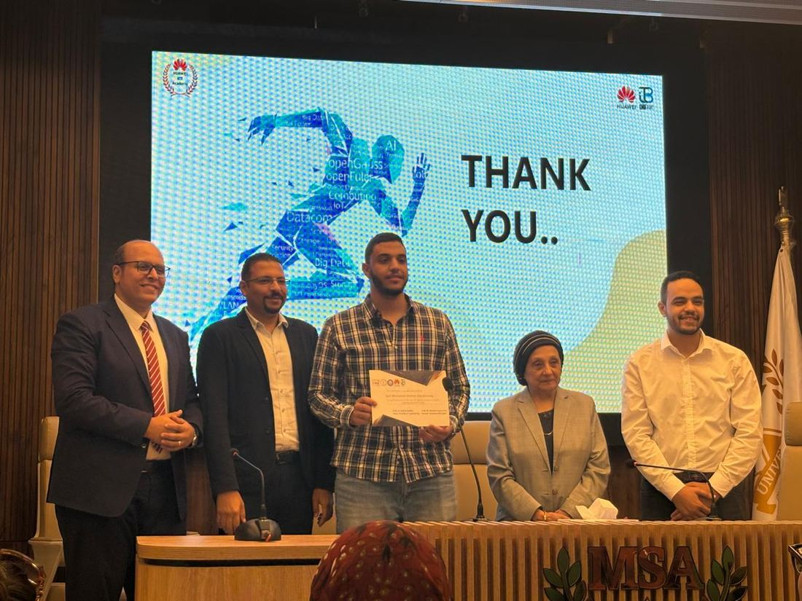
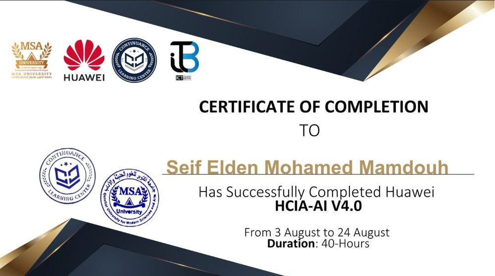
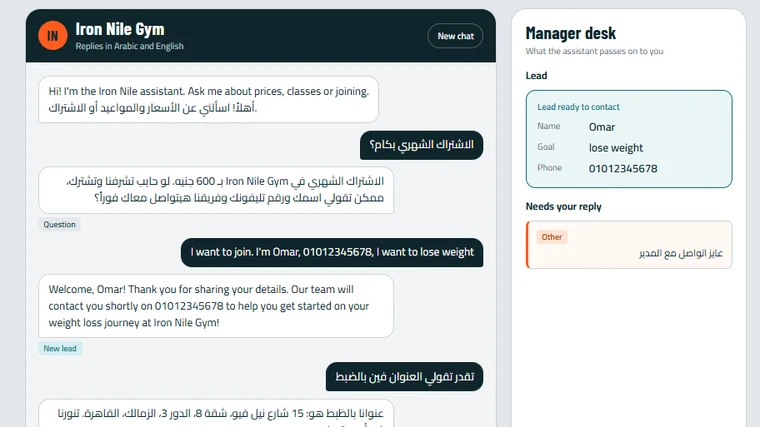
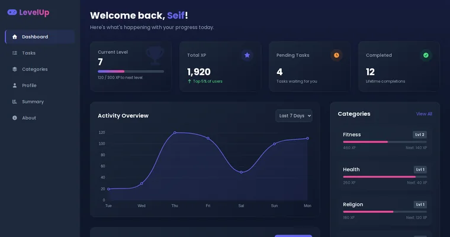

Open to internships and junior roles
Seif Elden Mohamed Mamdouh
I'm a Computer Science student building practical machine learning and AI projects.
I'm finishing the Machine Learning programme at NTI and studying AMIT's AI and Data Science diploma. My recent work is a bilingual chatbot for gyms and a model that recognizes physical activity from smartphone sensors. I'm looking for internships and junior opportunities in AI, machine learning and software development.
- Studying
- Computer Science at MSA University. Third year, GPA 3.3
- Training
- Machine Learning at NTI (120 hours). AI and Data Science at AMIT (243 hours).
- Recognition
- Huawei HCIA-AI certificate. Honored as a top 30 scorer at MSA.
01 / About
From C in grade 10 to AI and ML
I'm a third-year Computer Science student at MSA University. I started programming in grade 10 with C, moved to C++ for object-oriented programming and problem solving, and then to Python.
With Python I built web applications using Flask and SQLAlchemy. My focus has since shifted to AI and machine learning: I completed Huawei's HCIA-AI, I'm finishing the Machine Learning programme at NTI, and I'm working through AMIT's AI and Data Science diploma.
In my machine learning practice projects I follow the same workflow: understand the data, clean and preprocess it, then train and compare models such as KNN, SVM, linear regression and neural networks. My main projects are a bilingual chatbot for gyms, a model that recognizes activity from smartphone sensors, and LevelUp, a gamified habit tracker in PHP and MySQL.
02 / Skills
What I work with
Technologies I have used in my projects and training.
- Programming
- Python
- C++
- C
- C# (for games)
- Data structures
- Problem solving
Object-oriented programming in C++. I love data structures.
- AI and machine learning
- Machine learning
- Data cleaning and preprocessing
- Exploratory data analysis
- Classification
- Linear Regression
- Logistic Regression
- SVM
- KNN
- Random Forest
- Decision Tree
- Neural networks
- scikit-learn
- PCA
- Hyperparameter tuning (GridSearchCV)
- Model evaluation
- Google Gemini API
- Prompt design
Building depth through the NTI and AMIT programmes.
- Web and apps
- Flask
- SQLAlchemy
- PHP
- MySQL
- HTML
- CSS
- JavaScript
- Tailwind CSS
- Streamlit
03 / Experience
Education and training
- In progressMachine Learning TraineeNational Telecommunication Institute (NTI), 120 hours
Finishing the programme. Graduation project: Human Activity Recognition Using Smartphones.
- In progressAI and Data Science DiplomaAMIT, 243 hours
About 25% complete.
- 3 to 24 AugHuawei HCIA-AI V4.0Certificate of completion, 40 hours
Completed through MSA University, where I was honored as one of the top 30 scorers.
- Year 3Computer ScienceMSA University
GPA 3.3
- High schoolAmerican DiplomaGraduated with high honors
GPA 3.8


04 / Projects
Selected projects
Three projects, from AI to full-stack web. Select one to open the full case study.

AI chatbot
Iron Nile Gym Assistant
A bilingual chatbot that answers members in Arabic or English, captures leads, and hands anything that needs a person to the manager.
Python / Flask / Gemini API
View details →NTI graduation project
Human Activity Recognition Using Smartphones
A model that recognizes six physical activities from a phone's motion sensors, tested on volunteers it had never seen.
Python / scikit-learn / Streamlit
View details →
Full-stack web app
LevelUp
A gamified habit and task tracker: finish real tasks, earn XP in life categories, level up and climb a leaderboard.
PHP / MySQL / JavaScript / Tailwind / Chart.js
View details →Smaller projects
Practice work and earlier apps, with code on GitHub where available.
Machine learning practice
I practiced many machine learning projects, always in the same order: understand the data first, clean and preprocess it, and only then train and compare models.
- Understand the dataExploratory data analysis before touching any model.
- Clean and preprocessClean the data and prepare it for modeling, such as scaling features.
- Train and compare modelsKNN, SVM, linear regression, neural networks and more, then compare the results.
Flask and web apps
Small projects built while I was learning Flask and web development.
- Blog platformFlask / SQLAlchemy / Flask-Login / Flask-Mail
Blog with registration and email verification, posts with images, comments, likes and user roles.
- CV makerGitHubFlask / SQLAlchemy / WeasyPrint
Builds a CV from a form in one of three templates, with photo upload and PDF export.
- Marks portalGitHubFlask / Flask-Admin / Flask-Migrate
Students check subject marks and submit complaints; admins add students and approve, edit or reject complaints.
- Weather and accounts appFlask / SQLAlchemy / REST API
Sign-up, login and password reset, plus a city weather lookup using the OpenWeatherMap API.
05 / Contact
Get in touch
I'm looking for internships and junior opportunities in AI, machine learning and software development.
If my work looks relevant to what you're building, I'd be glad to hear from you.